What is The Land Between?
The Land Between is a bioregion in central Ontario extending from the Frontenac Arch in the East to the Georgian Bay, and up to southern Parry Sound. From East to West this belt spans more than 240km and is more than 40km wide on average. It's irreplaceable ecosystems provide many benefits to the region and serve as a critical refuge for many of Ontaio's wildlife species. However, the region's fragile balance is highly susceptible to urban sprawl and habitat loss which compromise long-term stability. For reference the boundaries of The Land Between will be displayed as a dashed outline while we explore some of it's unique features.
For a more in depth description see What Do You Mean The Land Between?
Bedrock
Bedrock acts as the foundation to any ecosystem. The Land Between acts as a transition zone between the Canadian Shield and the St. Lawrence Lowlands. These transition zones are called ecotones. Ecotones possess both the characteristics of the ecosystems they border and offer unique interactions between a large variety of environments and species resulting in an area of high biodiversity.
For more information on how the boundary was defined see The Land Between Boundary
Physiography
Serving as an important wildlife refuge, the wild lands of The Land Between are far more intact compared to the south. The conditions in this area have given rise to some of the highest habitat diversity in Ontario. Many geologists are drawn to the area for it’s unique mineral composition. The area is predominated by shallow soils, often less than 15cm of soil cover, increasing risks for environmental damage. Thin soil has lower absorptive capacity, and a limited capacity to filter water. These limitations are important considerations for increasing development in the area.
Shorelines
The Land Between has more shoreline to area than anywhere else in Ontario. Shorelines and wetlands are critical to the life cycles of many of Ontario’s reptiles, amphibians, and insects. However, the interconnectedness of these waterways increases the area’s susceptibility to contamination.
Biodiversity
Biodiversity is an important marker for healthy and functioning ecosystems. Higher biodiversity translates into more capacity to withstand climate change and to maintain ecosystem functions, and therefore greater well-being for people. Biodiversity results from more species interacting within the food web. The Land Between acts as both the northern limit for many southern species as well as the southern limit for northern species. Many rare and unique species also rely on this region for survival.
This map displays the spatial pattern of land cover diversity as measured by the Simpson’s Diversity Index. Method at a scale of 5Km2. The two blues represent the highest vegetation diversity.
Inhabitants of The Land Between
The Land Between is home to a wide range of important species. This region has many unique species interactions, as it is the meeting place of many northern and southern species. We have selected 20 of these species that we'll briefly introduce below as well as the areas they have been observed. Currently displayed is the number of different species, out of the 20 we've selected, that have been observed in each 10km x 10km tile. Observations for each individual species will be shown below.
Special Significance
The Land Between play a significant role in the lives of this species.
Blanding's Turtle (Emydoidea Blandingii)
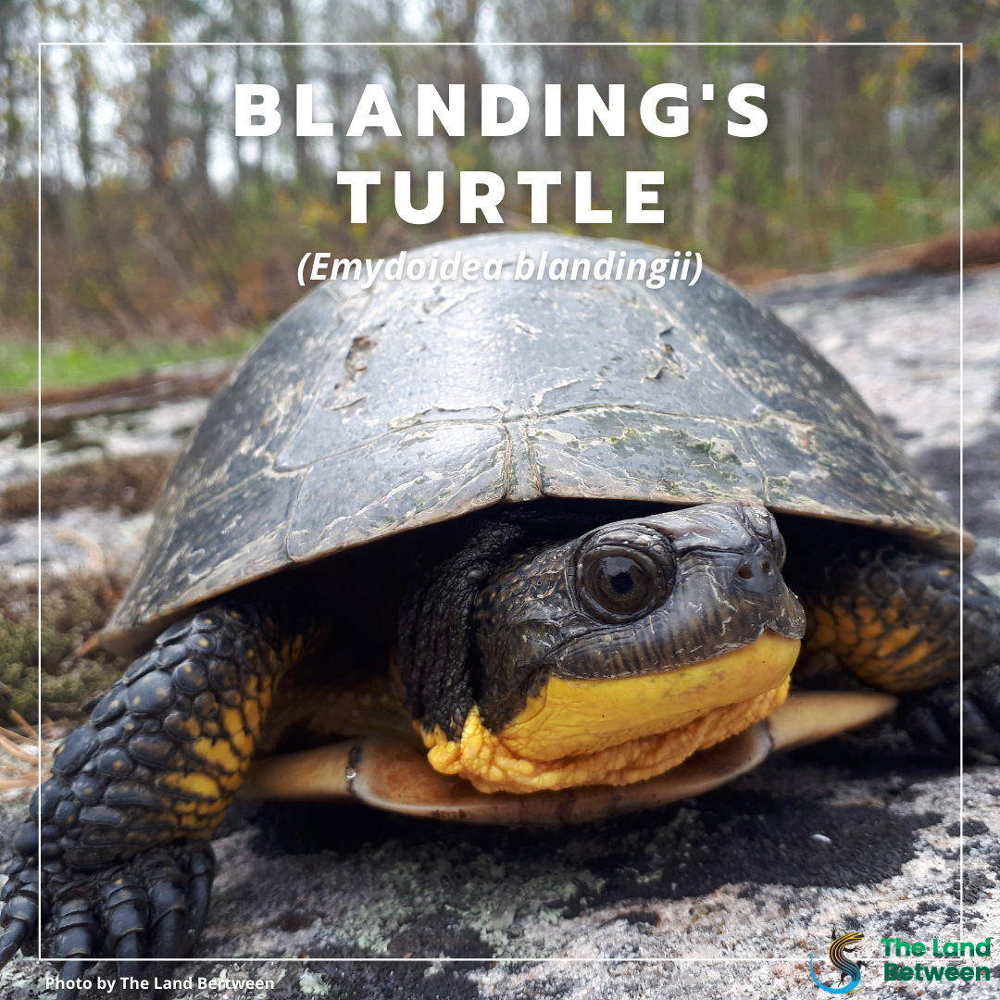{kind=link}
Conservation Status:
Endangered in Canada since 2016 / Threatened in Ontario since 2008
Identification:
• Medium-sized turtle, carapace length of ~ 20-23 cm
• Domed (army helmet-shaped), black to dark brown carapace with small yellow flecks
• Bright yellow chin and throat
• Yellow plastron with black patches along the outer edge of each scute
• Plastron hinge is located near the front
Info:
The Blanding’s Turtle is divided into two populations in Canada: the Great Lakes/St. Lawrence population that ranges from southern and central Ontario into southern Quebec, and the Nova Scotia population. During the active season, Blanding’s Turtles spend their time foraging, basking, and moving between habitats. They often travel great distances on land. Blanding’s Turtles have a preference for nutrient-rich, slow-moving, shallow water bodies with abundant aquatic vegetation and basking sites. They bask on rocks and logs just above the water’s surface as well as in sunny, open areas on land. Blanding’s Turtles typically nest in open areas with full sun exposure such as shorelines, forest clearings, or rocky outcrops. They will also nest on human influenced sites, such as gardens, gravel roads and road shoulders. Blanding’s Turtles overwinter in habitats with shallow, un-frozen water and can tolerate extremely low levels of oxygen.
Special Significance
The Land Between play a significant role in the lives of this species.
Eastern Musk Turtle / “Stinkpot” (Sternotherus odoratus)
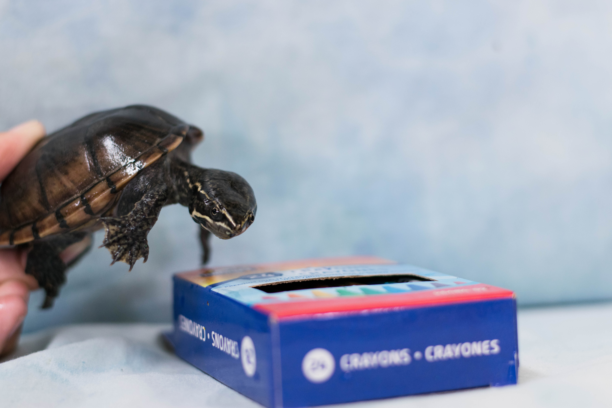{kind=link}
Conservation Status:
Listed as Special Concern in Canada since 2012 and in Ontario since 2014
Identification:
• Small turtle; carapace length rarely exceeds 13 cm
• Narrow, domed, brown to black carapace with dark spots or streaks
• Carapace is often covered in algae
• Plastron is yellow-brown with some scutes separated by skin
• Plastron hinge is located near the front
• Pointed snout with two light stripes extending from the nose across each side of the head
• Two or more barbels on the chin and throat
INFO:
In Canada, the Eastern Musk Turtle’s range extends from southern Ontario, north to Sudbury and North Bay, and to the southernmost parts of Quebec. The Eastern Musk Turtle is a highly aquatic species that rarely leaves the water except to nest or to access adjacent wetlands. They are most active at dusk and dawn, avoiding the midday sun by basking just below the water’s surface under the cover of floating vegetation. Eastern Musk Turtles are most commonly found near the shores of well-vegetated, shallow waterways with slow currents such as; rivers, bays of lakes, marshes and ponds. They overwinter in shallow waters, burying themselves in the bottom substrate and will occasionally use the burrows of other animals, or muskrat and beaver lodges. During the nesting season, females dig shallow nests in decaying plant matter, rotting wood, or sand and lay 2 to 5 eggs. When disturbed Eastern Musk Turtles will attempt to scratch and bite, and may release a foul, musky-smelling fluid from glands located on the underside edges of the carapace. This predator deterrence is how the Musk Turtle got its name.
Special Significance
The Land Between play a significant role in the lives of this species.
Eastern Hog-nosed Snake (Heterodon platyrhinos)
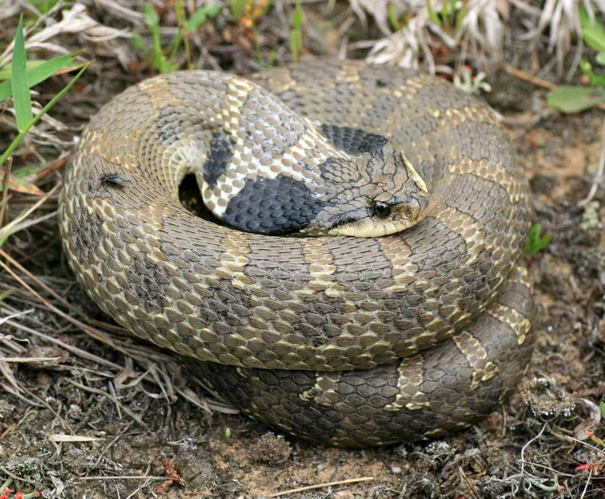{kind=link}
Photo Credit: Scott D. Gillingwater
Conservation Status:
Threatened in Canada since 2003, Threatened in Ontario since 2008
Identification:
• Thick-bodied snake, ~ 115 cm long (upper range)
• Distinctive upturned snout
• Dorsal colouration is highly variable ranging from light to dark with alternating dark blotches, to a patternless dorsal colour of olive or dark grey
• Underside is considerably lighter
• Large, dark blotch behind each eye
• Flattens neck when threatened
INFO:
Within Canada, the Eastern Hog-nosed Snake occurs only in south-central Ontario and can be found in sandy soil environments like beaches, wooded areas, and meadows. They are active predators and highly mobile with a large home range. There is little known about how Eastern Hog-nosed Snakes hibernate, but they have been observed digging individual hibernacula when pre-existing burrows are not available. They lay their eggs in sandy soil beginning in June, and eggs hatch about two months later. The Eastern Hog-nosed Snake is harmless but puts on an elaborate display when threatened, often alarming humans. Along with a cobra-like display of flattening their neck, this snake will also play dead by rolling onto its back, emptying its bowels and releasing blood out of its mouth and cloaca.
Special Significance
The Land Between play a significant role in the lives of this species.
River Otters (Lontra Canadensis)
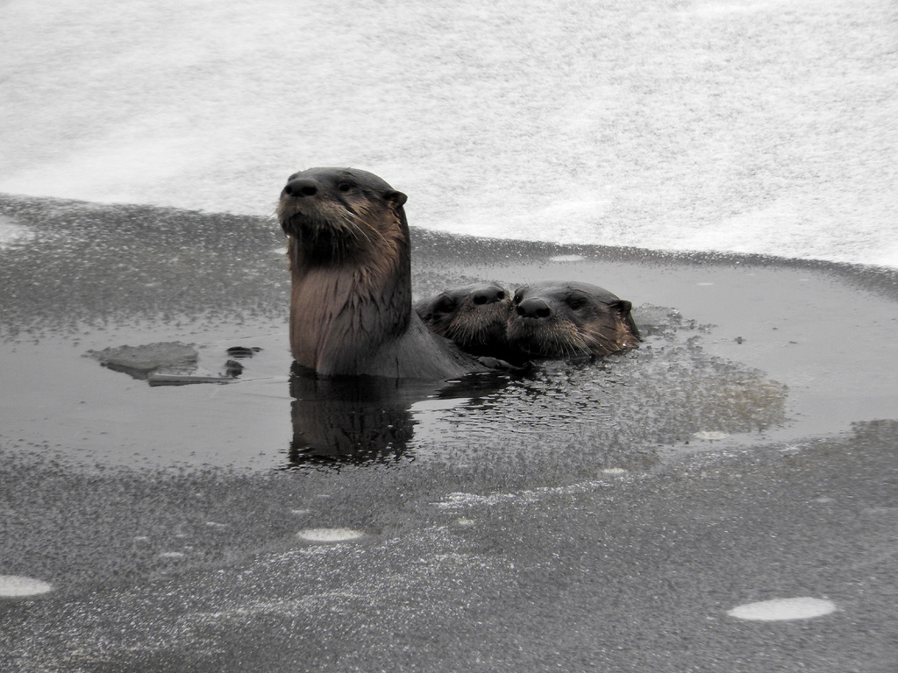{kind=link}
Conservation Status:
Species of Least Concern
Identification:
• Brown water-repellent fur
• webbed feet
• long tails
• Their underbody is usually lighter in colour
INFO:
River otters can be found in every province and territory except Prince Edward Island. They live near rivers, lakes and creeks. Their burrows are often built to be accessible from both on land and in the water. Currently shown on the map is observation counts ranging from 1 to 13 seperate observations, with darker squares representing a larger number of observations.
Special Significance
The Land Between play a significant role in the lives of this species.
Common Nighthawk (Chordeiles minor)
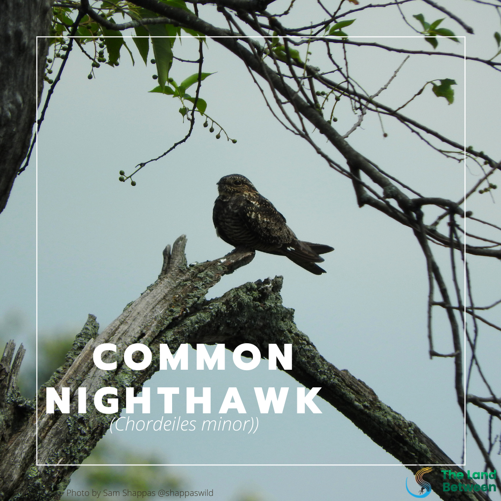{kind=link}
Conservation Status:
Threatened in Canada since 2007, and Special Concern in Ontario since 2009.
Identification:
• Medium-sized bird (70-98 g) with mottled grey and brown plumage, and large, dark eyes
• Long triangular wings, with a bold white bar near the tip
• Males have a white throat patch
• During breeding season the male nighthawk makes a large boom noise which is caused by air passing through his wings
• Distinguishable from Eastern Whip-poor-will by white wing bars, dark horizontal barring on underparts, and its “peent” call
INFO:
Common Nighthawks are a migratory species that breed throughout most of mainland North America, and overwinter in South America. They breed throughout Ontario, but most sightings have been along the southern edge of the Canadian Shield, in the Niagara region, and near Thunder Bay. Common Nighthawks are ground nesters that breed in a variety of open landscapes devoid of vegetation such as forest clearings, sand dunes, rocky outcrops, and gravel rooftops. Early into European settlement in North America, Common Nighthawk populations likely increased with the newly deforested land and introduction of gravel rooftops, however, with continued settlement, the amount of available habitat is declining.
Special Significance
The Land Between play a significant role in the lives of this species.
Woodchuck (Marmota Monax)
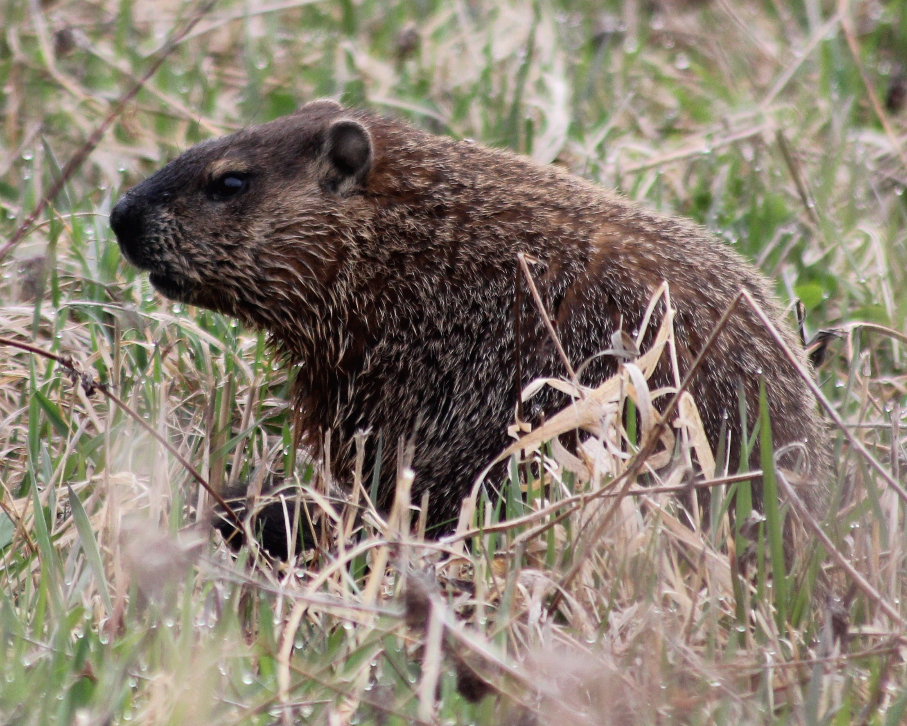{kind=link}
Conservation Status:
Species of Least Concern
Identification:
• Stocky with a flattened head
• Short bushy tail
• Fur ranges from yellowish to dark reddish brown
• Forefeet have four claws, hind feet have five
INFO:
Often found in open areas such as fields, clearings, open forests, and rocky slopes. They rely on grasses and other short growing plants for food. They spend a majority of their time sunning on warm ground, flat rocks, and low branches. Many other animals rely on woodchuck holes for shelter. Currently shown on the map is observation counts ranging from 1 to 154 seperate observations, with darker squares representing a larger number of observations.
Special Significance
The Land Between play a significant role in the lives of this species.
Little Brown Bat (Myotis Lucifugus)

"Little brown bat" by USFWS Headquarters is licensed under CC BY 2.0
Conservation Status:
Endangered
Identification:
• Small body size, usually 8.0-9.5 cm
• This species is sexually dimorphic with females being larger than males
• Color ranges from tan or reddish to dark brown
• Has a short snout and a gently sloped forehead
INFO:
The little brown bat is currently endangered largely due to an invasive fungus that causes white-nose syndrome. Cases of white-nose syndrome has been increasing since 2006 causing an extreme decline in population.
Special Significance
The Land Between play a significant role in the lives of this species.
Northern Long Eared Bat (Myotis Septentrionalis)

"Northern long-eared bat" by USFWS Headquarters is licensed under CC BY 2.0
Conservation Status:
Near Threatened
Identification:
• Small body size, 8.6 cm on average
• This species has a longer tail and wingspan than other bats of similar size
• Fur and wings are light brown
• Has long pointed ears that will extend well past the nose when folded forwards
INFO:
The northern long eared bat is currently threatened by white-nose syndrome. Cases of white-nose syndrome have caused a significant decline in the north-eastern population.
Special Significance
The Land Between play a significant role in the lives of this species.
Five-lined Skink (Plestiodon fasciatus)
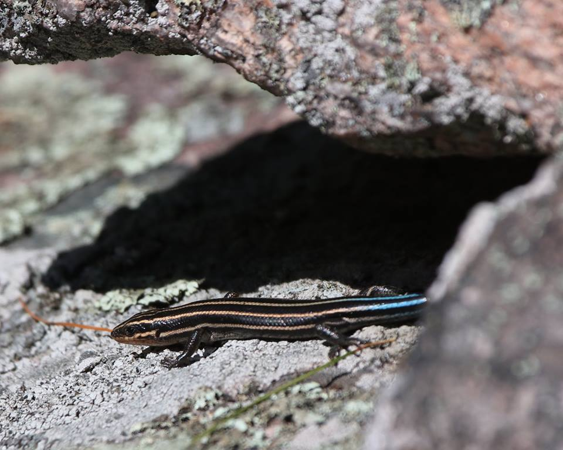{kind=link}
Conservation Status:
Special Concern in Canada since 2009/ Special Concern in Ontario since 2009
Identification:
• Small lizard, ~ 8.6 cm long from vent to snout
• Black body with five cream-coloured lines running lengthwise
• Juveniles have a bright blue tail that fades to brown with age
• Males have orange jaws during breeding season
• Only lizard native to Ontario
INFO:
In Canada, the Five-lined Skink occurs only in Ontario on the southern Canadian Shield and in southwestern Ontario. Five-lined Skinks prefer habitat with a relatively open canopy, rocky outcrops, and new plant growth. They spend the majority of their time under the cover of rocks and logs, but can be seen basking on cooler mornings. They move quickly and when threatened will flee or “drop” their tails as a way to escape predators, leaving their tail behind. Five-lined Skinks have no defined home range and are not territorial. They hibernate communally under rocks and decaying wood, and sometimes even nest communally. Females lay their eggs under rocks or debris in early summer and sit with their nest to defend it from predators.
Special Significance
The Land Between play a significant role in the lives of this species.
Loon (Gavia Immer)
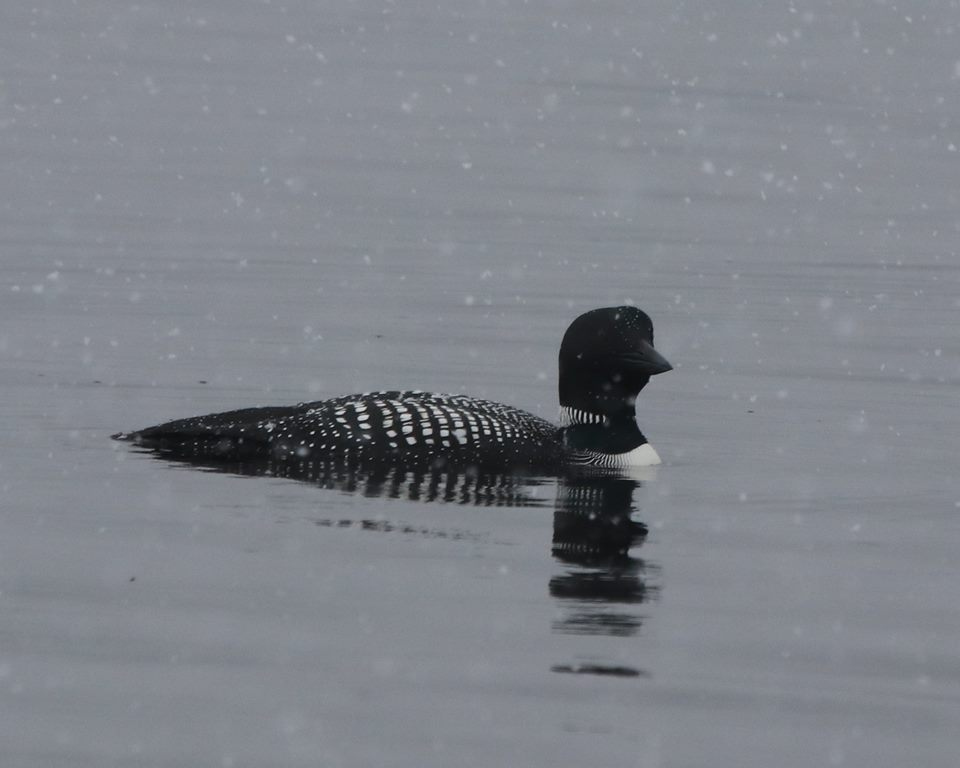{kind=link}
Conservation Status:
Species of Least Concern
Identification:
• broad black head and neck with a greenish, purplish, or bluish sheen
• Black or blackish-grey upper parts with white underparts
• Red eyes
• has a checkered black and white mantle
INFO:
Loons nest on shorelines, constructing mounds of marsh grasses. The loon is the provincial bird of Ontario. They favour lakes with islands and coves.
Special Significance
The Land Between play a significant role in the lives of this species.
Eastern Whip-poor-will (Antrostomus Vociferus)
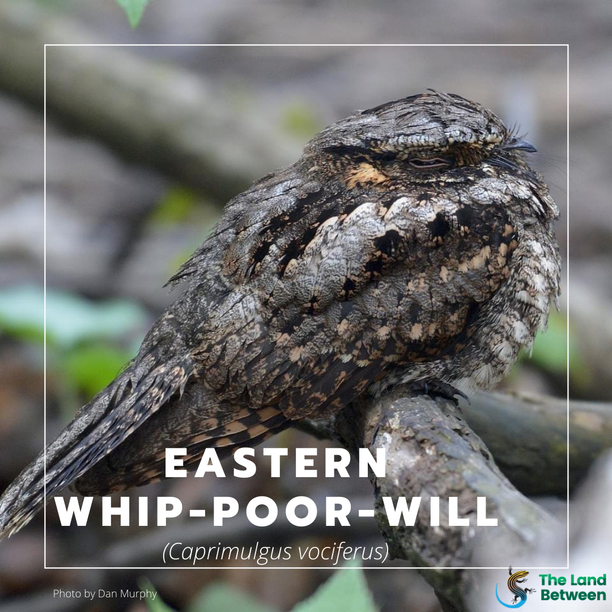{kind=link}
Conservation Status:
Threatened in Canada since 2011 and Threatened in Ontario since 2009.
Identification:
• Medium-sized bird (50-55 g) with mottled grey and brown plumage and large, dark eyes
• Long triangular wings with cinnamon barring
• Males have a rusty patch on cheeks, with a whitish throat stripe and white corners to tail
• Females lack rusty patch, and have a buffy throat stripe and tail corners
• More commonly heard than seen - calls its name (“Whip-poor-will”) at night, especially during a full moon
• Distinguishable from Common Nighthawk by the lack of the white wing bars, cinnamon barring on wings, throat stripe, and sound of call
INFO:
The Eastern Whip-poor-will is a migratory species that breeds in most of northeastern United States, and from central Saskatchewan into the Atlantic provinces. In Ontario, much of their breeding population is concentrated in the Land Between, along the Georgian Bay coastline, and up to the northern edge of Lake Superior. Eastern Whip-poor-wills overwinter in southern parts of Florida, eastern Mexico and parts of the Carribean into Panama. They require forested areas next to open landscape to swoop down and forage for insects. Preferred habitats have sparse, irregular trees with good perches such as; forest edges, pine plantations, and regenerated forests after a fire.
Special Significance
The Land Between play a significant role in the lives of this species.
Golden-winged Warbler (Vermivora chrysoptera)
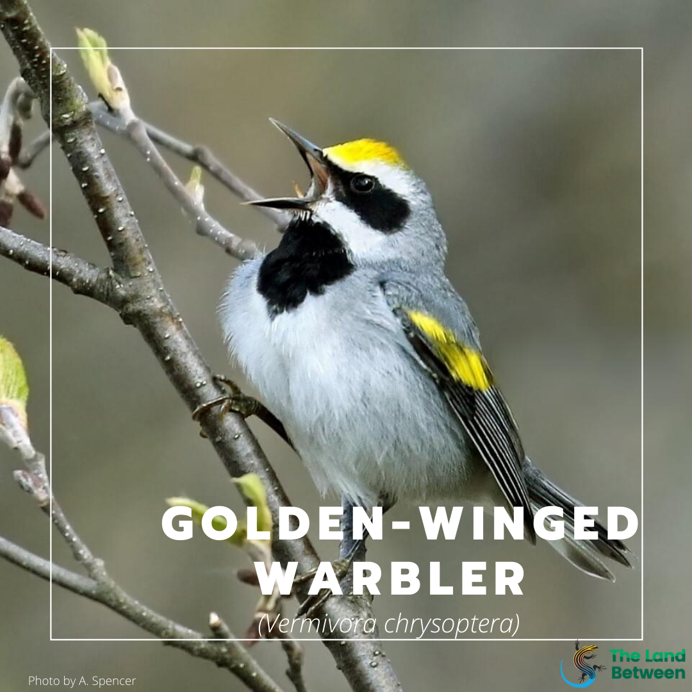{kind=link}
Conservation Status:
Threatened in Canada since 2007, Special Concern in Ontario since 2008.
Identification:
• Small, grey songbird (~ 10 g) with white underside and face
• Males have a black eye-mask and throat, and yellow wing patches and crown
• Females have similar markings but mask and throat are grey
INFO:
The Golden-winged Warbler is a migratory species that breeds in much of the north-eastern United States, southern Ontario, and the edges of Saskatchewan, Manitoba and Quebec. They overwinter in Central America. Roughly 79% of the Canadian population breeds within the Land Between. Golden-winged Warblers require habitats of new vigorous growth within close proximity to large mature forests, and an understory of weeds and shrubs. This is typically found where cleared lands are regrowing into forests, as well as in wetlands. After fledging, these birds move into mature forests with dense cover to protect themselves from predators such as hawks.
In the Land Between, shoreline development is altering the treed wetland habitat in which the Golden-winged Warbler is most often found. This local threat could have substantial consequences for the Ontario population.
The Golden-winged Warbler often competes and mates with the Blue-winged Warbler, producing viable offspring. The hybridization of these two is called the Brewster’s Warbler (when the hybrid appears grey like the Golden-winged Warbler) or the Lawrence’s Warbler (when hybrid appears yellow like the Blue-Winged Warbler). Due to land clearing for agriculture, the Blue-winged Warbler has moved further north into the Golden-winged Warbler’s range, increasing the likelihood of hybridization. Over generations the Blue-winged Warbler is replacing the Golden-winged Warbler.
Special Significance
The Land Between play a significant role in the lives of this species.
Common Raven (Corvus Corax)
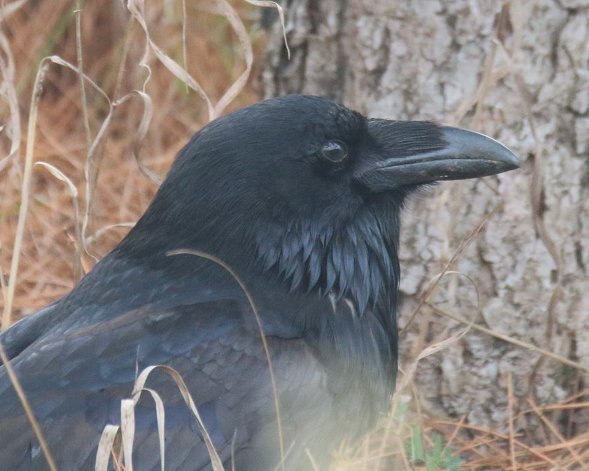{kind=link}
Conservation Status:
Species of Least Concern
Identification:
• One of the two largest Corvids alongside the thick-billed raven
• long, graduated, wedge shaped tail
• black iridescent plumage
• dark brown iris
• neck feathers are pale brownish-grey
INFO:
Able to thrive in a variety of habitats, the raven has one of the largest ranges of any passerine. They prefer wooded areas with nearby open land, or coastal regions. Currently shown on the map is observation counts ranging from 1 to 54 seperate observations, with darker squares representing a larger number of observations.
Northern Limit
The Land Between acts as the northern limit for this predominantly southern species.
American Crow (Corvus brachyrhynchos)

"American Crow - Corvus brachyrhynchos" by jpmckenna - Plotting 2020 Adventures is licensed under CC BY-NC 2.0
Conservation Status:
Species of Least Concern
Identification:
• All black with iridescent feathers
• Can be distinguished from ravens by its smaller size
INFO:
Crows can be found in a variety of habitats across North America. Crows live in the south year-round and many migrate north through the land between to breed. Outside of nesting season they often gather in large communal roosts. Currently shown on the map is observation counts ranging from 1 to 101 seperate observations, with darker squares representing a larger number of observations.
Northern Limit
The Land Between acts as the northern limit for this predominantly southern species.
Green Heron (Butorides Virescens)
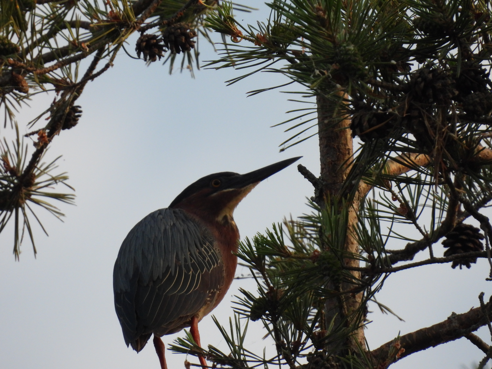{kind=link}
Conservation Status:
Species of Least Concern
Identification:
• Geenish-black cap
• Greenish back
• wings that are grey-black grading into green or blue
• Chestnut neck with white line down the front
INFO:
The Green Heron breeds in inland marshes and alterations of wetlands have been identified as an important threat to this species. Many green herons migrate to the land between to breed before returning south for the winter. They often hunt along shorelines or in shallow water, often dropping food or small objects into the water to attract fish. Currently shown on the map is observation counts ranging from 1 to 67 seperate observations, with darker squares representing a larger number of observations.
Northern Limit
The Land Between acts as the northern limit for this predominantly southern species.
Big Brown Bat (Eptesicus Fuscus)

"Big Brown Bat (Eptesicus fuscus)" by mypubliclands is licensed under CC BY 2.0
Conservation Status:
Least Concern
Identification:
• Body length is 11-13 cm
• Fur is reddish brown, with black ears, and hairless black snout and wing membranes
• The ears are relatively short with rounded tips
INFO:
These bats are often attracted to properties because they consume many agricultural pests such as cucumber beetles.
Northern Limit
The Land Between acts as the northern limit for this predominantly southern species.
Northern Cardinal (Cardinalis Cardinalis)

"Northern Cardinal (Cardinalis cardinalis)" by Dominic Sherony is licensed under CC BY-SA 2.0
Conservation Status:
Species of Least Concern
Identification:
• Medium sized songbird, males are slightly larger than females
• Males are bright red with a black mask around their bill
• They have a prominent crest on top of their head
• Females are olive brown with red on their wings, tail, and crest.
INFO:
The northern cardinal lives in thickets and bushy areas at the edges of woodlands. Their range has been increasing and now spans from Manitoba to Newfoundland and Labrador. Their diets consist of insects, seeds, and berries. Currently shown on the map is observation counts ranging from 1 to 609 seperate observations, with darker squares representing a larger number of observations.
Northern Limit
The Land Between acts as the northern limit for this predominantly southern species.
Chorus Frog (Pseudacris triseriata)
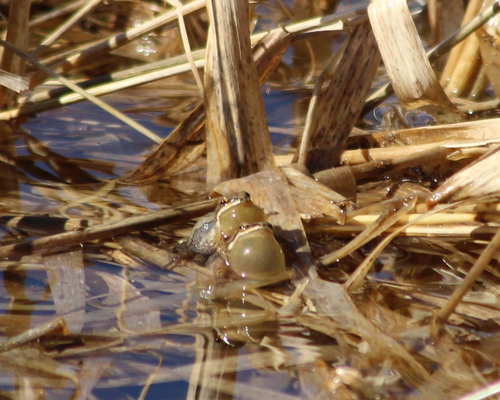{kind=link}
Conservation Status:
Threatened in Canada since 2010/ Not Listed in Ontario
Identification:
• Small tree frog, ~ 2.5 cm long from vent to snout
• Olive-grey to brown with three dark dorsal stripes sometimes broken into blotches
• Dark line from snout to groin and white line on upper lip
• Call sounds like running a finger across the teeth of a comb
• Distinguishable from Boreal Chorus Frog by call and separate range
INFO:
In Canada, the Chorus Frog occurs only in southern Ontario and southwestern Quebec (the Boreal Chorus Frog occurs in northern Ontario and the central provinces). Chorus Frogs are poor swimmers and only spend about 20 days of the breeding season in aquatic habitats. They are one of the first frogs to call in the spring, sometimes as early as March, and can start breeding before the water is free of ice. Chorus Frogs lay their eggs in shallow, often temporary water bodies such as flooded fields, ditches, and swamps to avoid aquatic predators. Terrestrial habitat is often selected based on proximity to breeding ponds, but grassy or wooded areas near water, or damp, open habitats are preferred. Chorus Frogs are freeze-tolerant and hibernate under rocks, logs, leaf litter, and loose soil. Currently shown on the map is observation counts ranging from 1 to 35 seperate observations, with darker squares representing a larger number of observations.
Southern Limit
The Land Between acts as the southern limit for this northern species.
Mink Frog (Lithobates Septentrionalis)

Conservation Status:
Species of Least Concern
Identification:
• Olive to brown with dark spots or mottling on the sides and hind legs
• The belly is yellowish
• Large tympani
• Extensive webbing on hind feet, reaches the last joint of the longest toe
INFO:
Named for their musky scent which is similar to a mink. Rarely found on land, they inhabit large permanent ponds, lakes, slow moving rivers, and sphagnum bogs. A large chorus of mink frogs sounds like popcorn popping. Currently shown on the map is observation counts ranging from 1 to 31 seperate observations, with darker squares representing a larger number of observations.
Southern Limit
The Land Between acts as the southern limit for this northern species.
Black-backed Woodpecker (Picoides Arcticus)
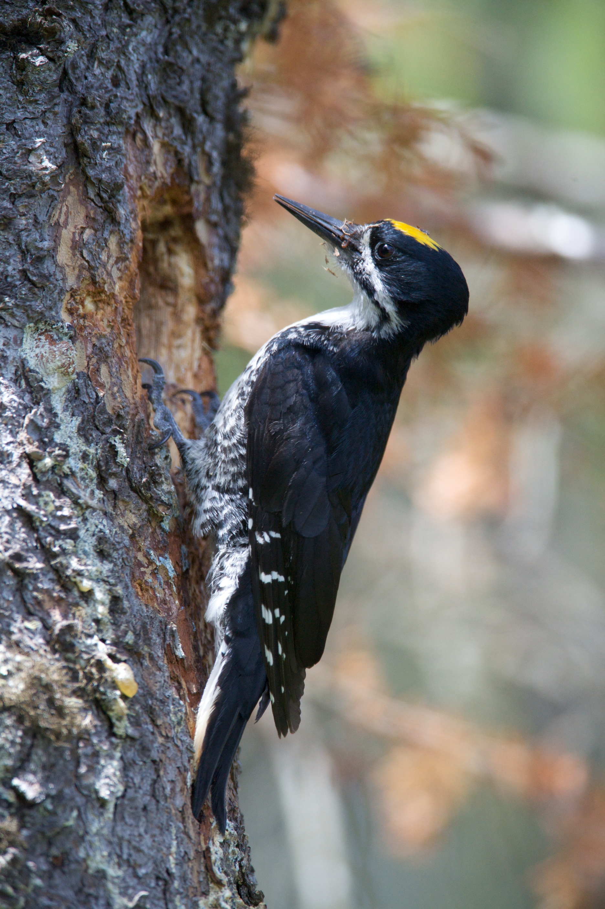{kind=link}
"Black Backed Woodpecker" by U. S. Fish and Wildlife Service - Northeast Region is licensed under CC PDM 1.0
Conservation Status:
Species of Least Concern
Identification:
• Mostly black with a white stripe on the face.
• Males have a yellow crown patch.
• White throat and belly
• Females have white bars on their flanks
Southern Limit
The Land Between acts as the southern limit for this northern species.
Gray Jay (Perisoreus Canadensis)
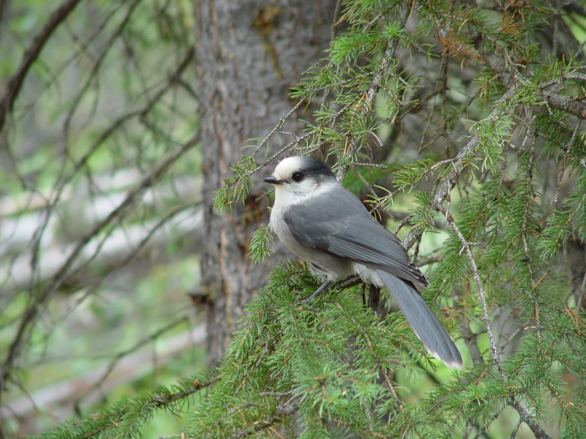{kind=link}
"Gray Jay (Perisoreus canadensis)" by Franco Folini is licensed under CC BY-SA 2.0
Conservation Status:
Species of Least Concern
Identification:
• Adults are dark gray with a lighter belly, and white face and throat.
• Juveniles are a darker gray with a white stripe on their face.
• While smaller than other jays, they are considered large songbirds.
Wolves and Coyotes
Due to human influence coyotes have been able to out compete wolves in many areas that they've historicly occupied. Coyote populations are largest in the south and are expanding northward. Wolves are now rarely seen south of the land between. Currently shown on the map is a comparison of recent wolf and coyote observations with red representing areas where only coyotes have been observed, green representing wolves, and yellow both species present.
Wolf (Canis lupus) - Southern Limit Species

"Wolf" by Dennis from Atlanta is licensed under CC BY-SA 2.0
Conservation Status:
Species of Least Concern
Identification:
• Can be distinguished from other canis species by its less pointed ears and muzzle, as well as shorter torso and long tail
• Has longer legs than most other canids
• Very dense fur consisting of a short undercoat and long, coarse guard hairs which determine its colour
INFO:
Wolves live in a variety of habitats but their range has been significantly reduced by humans. They work in packs to hunt large herbivorous mammals such as deer and moose. Canada is an important stronghold for the species and wolves are a protected species in national parks.
Coyote (Canis Latrans) - Northern Limit Species
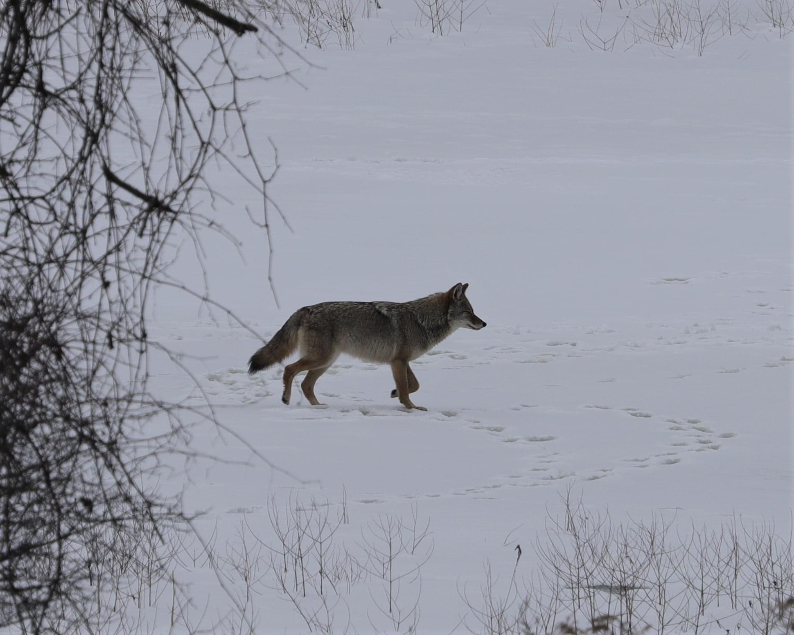{kind=link}
Conservation Status:
Species of Least Concern
Identification:
• colour can vary but is predominantly light grey and red, interspered with black and white
• Typically smaller than wolves, with longer ears
• Muzzle forms an almost continuous line with the forehead
• Yellow slanting eyes with black round pupils
• Paws are more elongated than most dogs
INFO:
Coyotes prefer open or semi-wooded habitats. They often bed down in thickets. They often travel long distances, up to 16km per day and are competent swimmers. Although often persecuted by humans, their range has greatly expanded as populations of wolves and cougars dropped. People have also created many conditions that benefit them such as the clearing of forests, provision of carrion, and introducing domestic livestock.